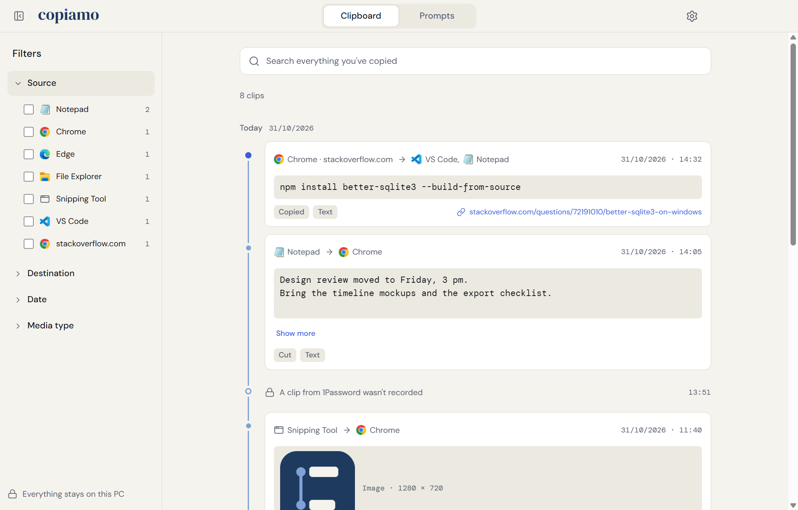
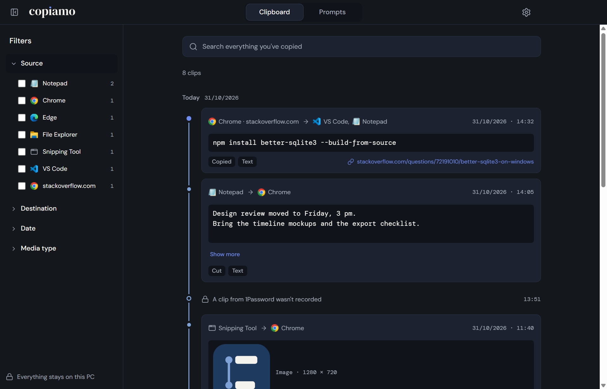
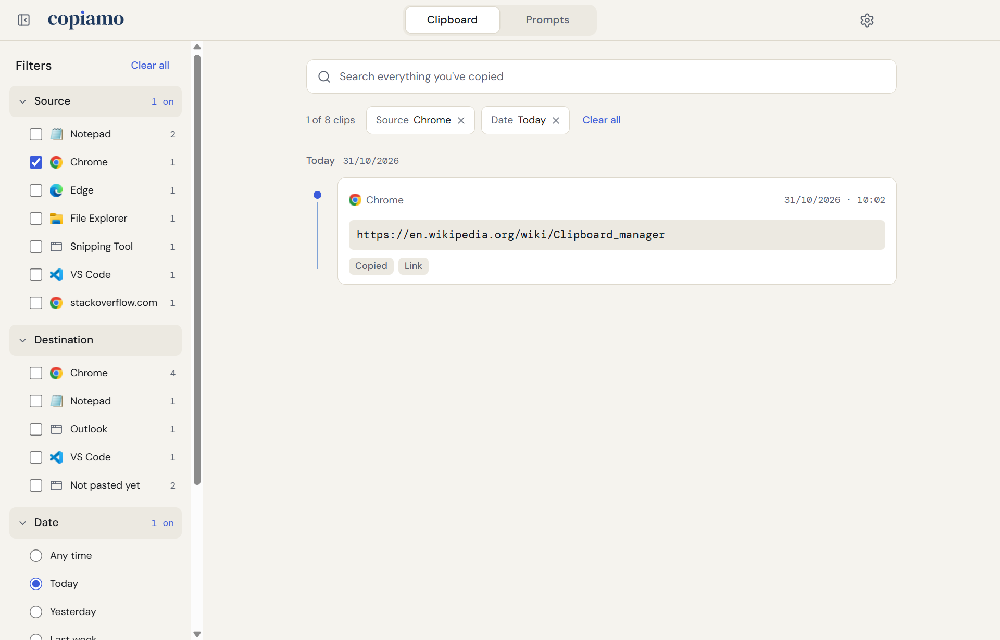
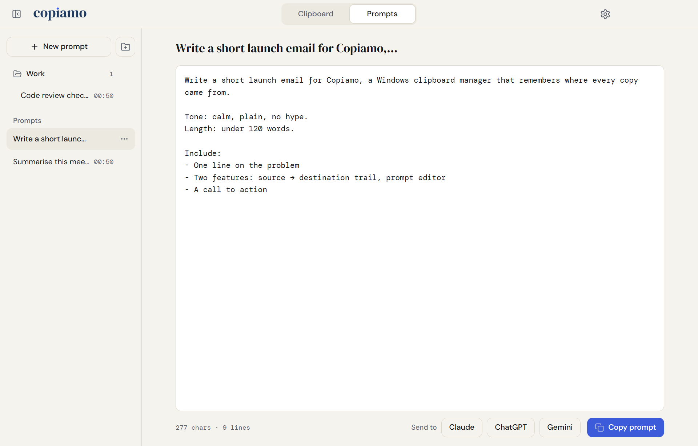
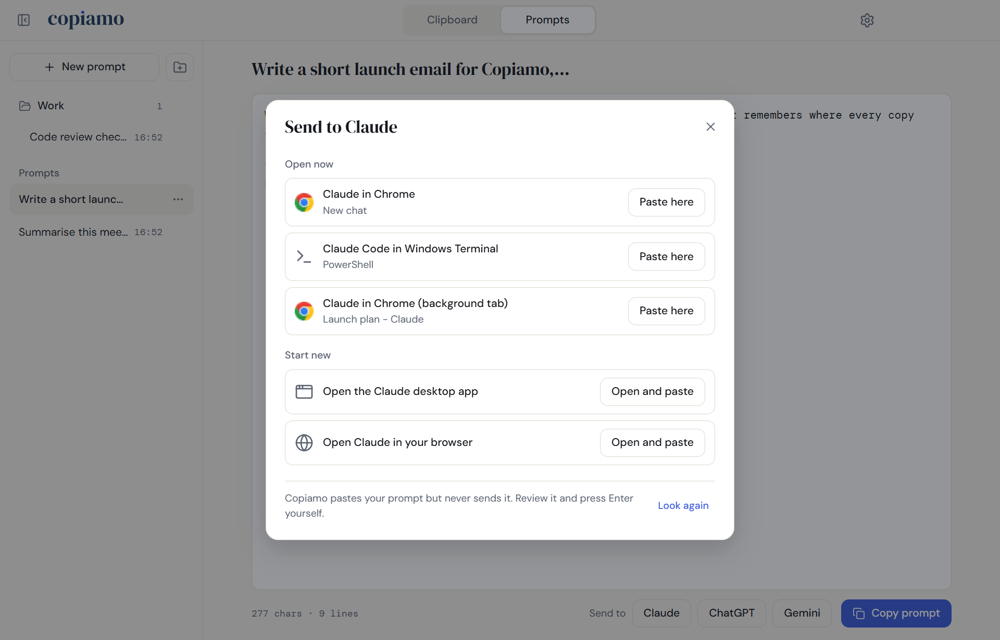
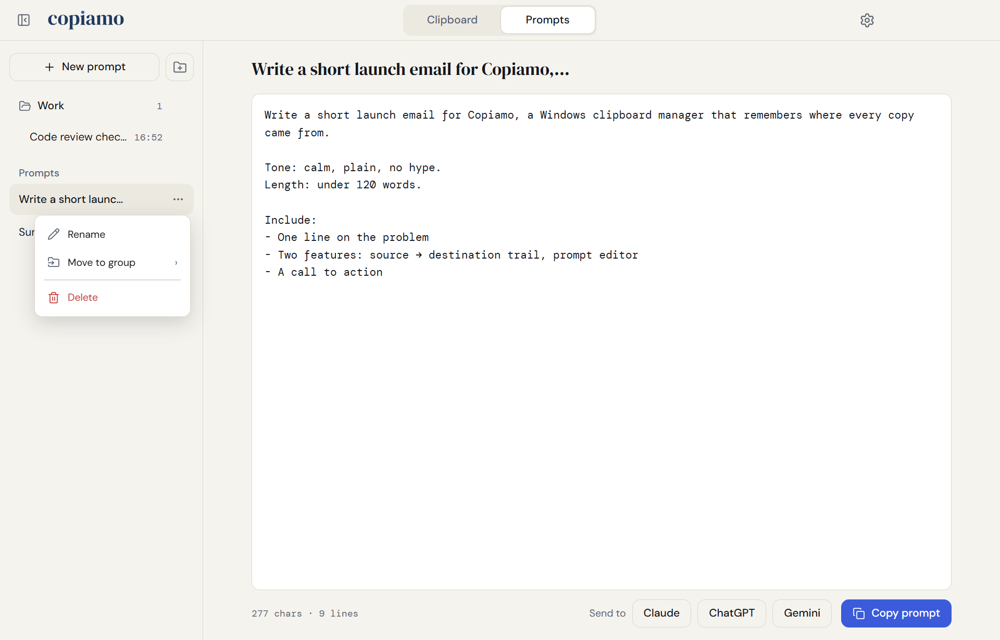
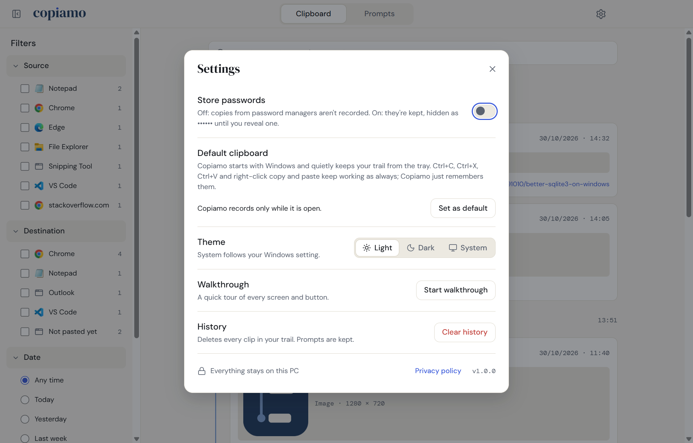
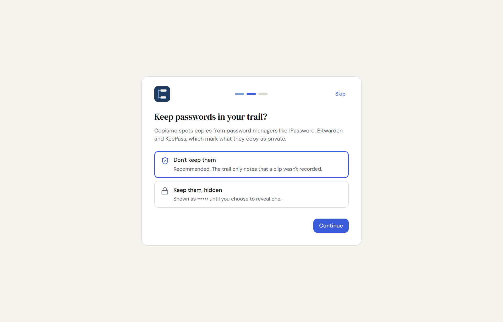
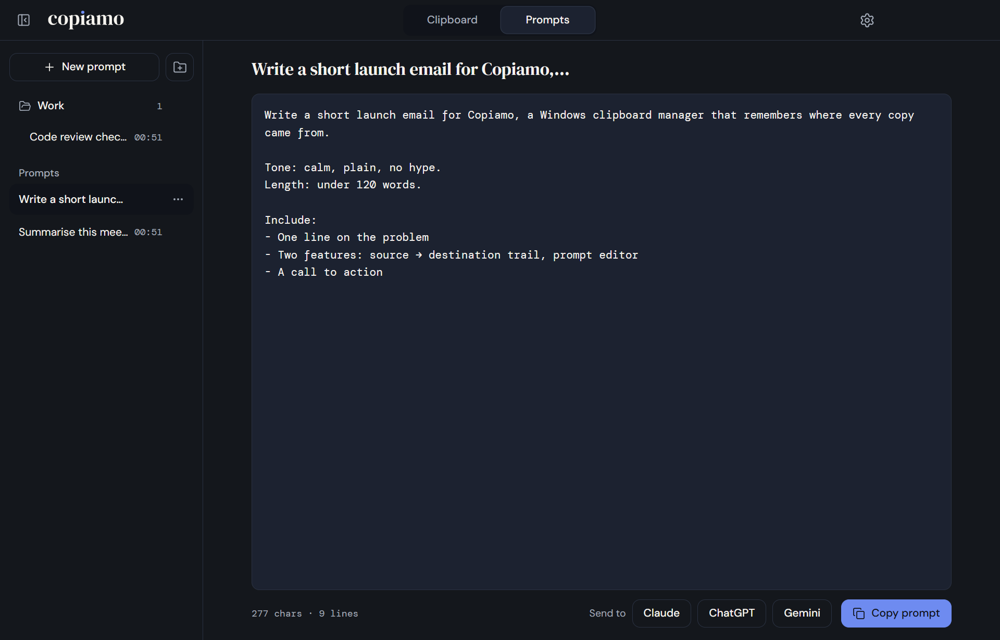

™
™
Every copy remembers where it came from.
Your clipboard, with a memory: everything you copy, cut and paste on Windows, in one calm timeline.
Windows 10/11 · Everything stays on your PC · No account · No data collected


What is Copiamo?
You copy dozens of things a day, and the clipboard forgets each one the moment you copy the next. Copiamo keeps them all, newest first, and remembers the journey of each clip: the app or website it came from, and every app you pasted it into.
Lost that command from yesterday? The link someone sent last week? Filter by source, destination, date or type and it's back in seconds. And for the prompts you write for AI assistants, Copiamo has a prompt editor that keeps your formatting exactly and pastes into Claude, ChatGPT or Gemini wherever they're open.
What it can do
A trail of everything
- Keeps every copy, cut and paste: text, links, images and files.
- Shows the source (app or website) and each destination.
- Tags each clip with its date, time and type.
- Copy again any clip with one click.
Find it fast
- Filter by source and destination, several at once.
- Filter by date: today, yesterday, last week, month or year, a single date or a range.
- Filter by media type and search all your text.
A prompt editor
- Keeps every space, tab, number and bullet exactly as typed.
- Ctrl+C with nothing selected copies the whole prompt.
- Paste into Claude, ChatGPT or Gemini: desktop app, any browser tab or command line. You press Enter.
- Each prompt is named after its first line; rename and group them as you like.
- Passwords stay out: copies from password managers aren't recorded, unless you choose to keep them hidden.
- Private by design: your history lives only on your PC. Copiamo has no servers.
- Works with your shortcuts: Ctrl+C, Ctrl+X, Ctrl+V and right-click work as always.
- Light and dark: follows Windows, or pick one.
Screenshots







Available on
Microsoft Store
The Windows app (Windows 10 and 11, 64-bit).
Getting started
- Install Copiamo from the Microsoft Store and open it.
- Choose whether to make it your default clipboard (it then starts with Windows and records from the tray).
- Copy, cut and paste as usual. Your trail fills up in the Clipboard tab.
- Open the Prompts tab to write a prompt, then send it to Claude, ChatGPT or Gemini.
Questions
Is anything I copy sent anywhere?
No. Your history is saved only on your PC, and Copiamo has no servers. See the privacy policy.
How does Copiamo keep passwords out?
Password managers such as 1Password, Bitwarden and KeePass mark what they copy as private, and Copiamo also knows these apps by name. Those copies aren't recorded; the trail just notes that one wasn't. You can choose to keep them instead, hidden as •••••• until you reveal one. Passwords typed or copied from elsewhere look like any other text, so they are recorded.
What does "default clipboard" mean?
Windows has one clipboard that every app shares, and Copiamo never replaces it. As your default clipboard, Copiamo starts with Windows and keeps recording from the tray when you close its window. Windows asks you to confirm this once, in Settings › Apps › Startup.
Why does a clip show no destination?
Copiamo sees pastes made with Ctrl+V (and Shift+Insert). Windows doesn't announce pastes made from a right-click menu, so those can't be tracked.
Does Copiamo send my prompt to the AI for me?
It pastes your prompt into the chat box and stops there. You read it and press Enter yourself. It can find the assistant in its desktop app, in any browser tab (even one in the background) or running in a terminal.